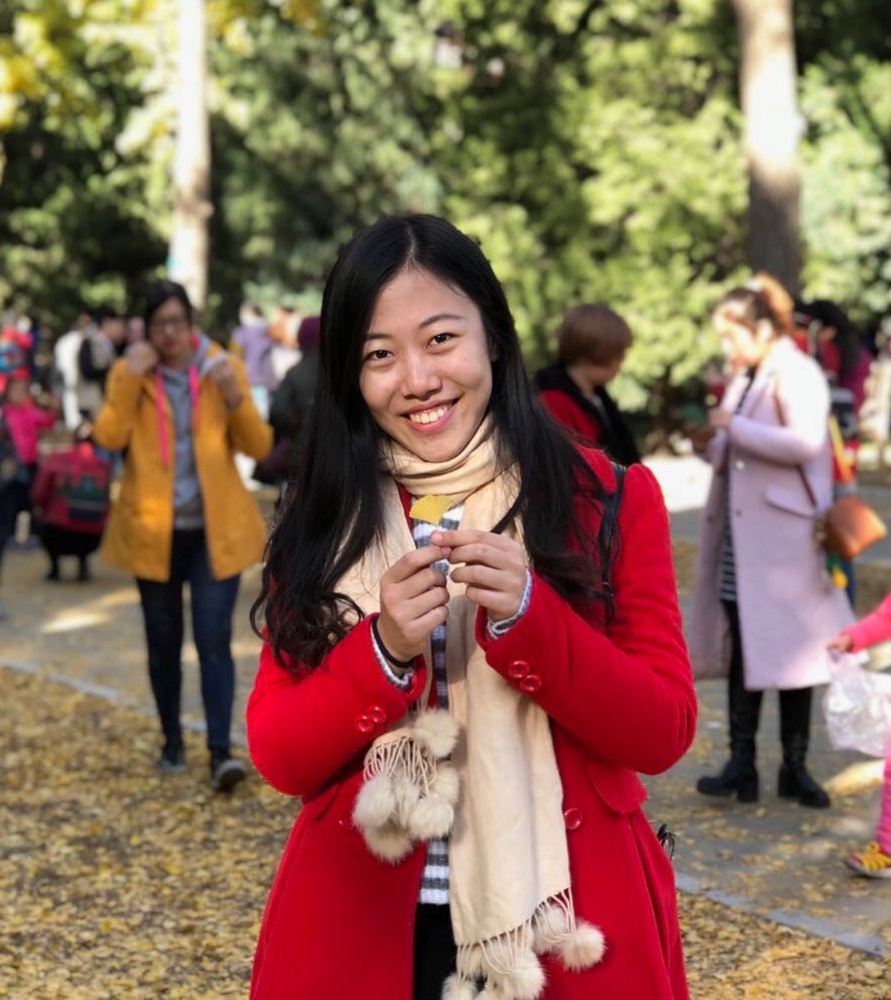

|  |
ChenXi Xu Master's Student, The Robotics Institute, School of Computer Science Carnegie Mellon University Email: chenxix@andrew.cmu.edu [Github] |
| 2018/01 - 2018/04 | Software Developer Intern at Hulu Beijing, what... group. |
| 2017/06 - 2017/09 | Research Intern at Microsoft Research Asia, Internet Graphics Group. |